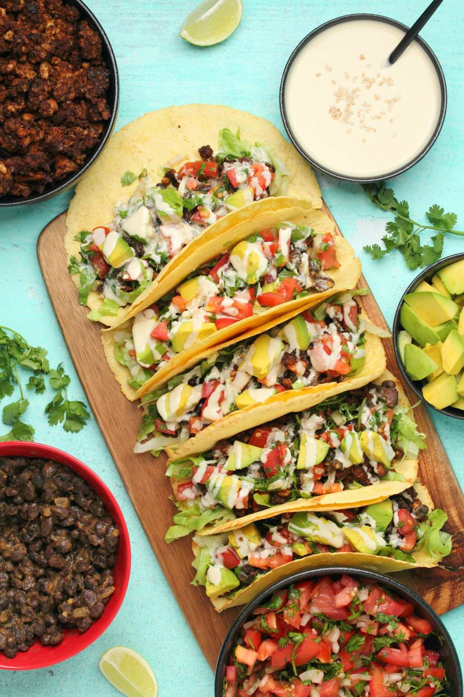

Tacos Veganos

Instructions
- Bring the water, taco seasoning, and onion to a boil. Add the TVP and reduce heat to low. Allow the TVP to absorb the liquid, and then add the drained black beans.
Cover and cook on low heat, stirring often, until the tortillas are ready – be mindful to not let the filling scorch on the bottom of the pot. Check for seasoning – add salt if needed (taco seasonings all have different salt contents so use your judgment on how much to add).
Heat up the tortillas in a pan with some oil, on a grill, or over your stove burner.
Remove the filling from the heat and build your tacos using your favorite toppings.
Return to home page